Description
⬩ Features ⬩
Feature Title Template
Feature content template
⬩ Story ⬩
⬩ Development Status ⬩
⬩ Demo ⬩
Paragraph
⬩ Developers ⬩
First Paragraph
Second Paragraph
⬩ Newsletter ⬩
Subscribe Button
Press
中
ENG